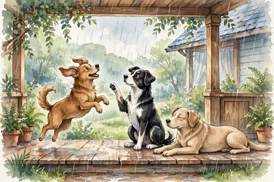
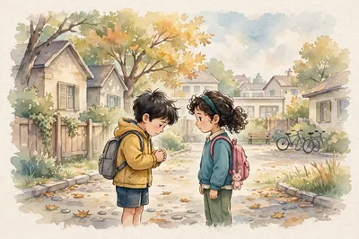
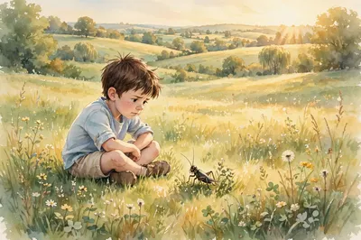
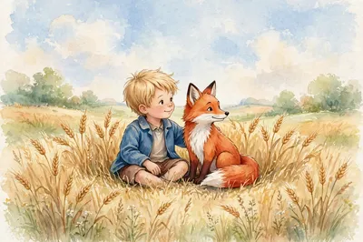
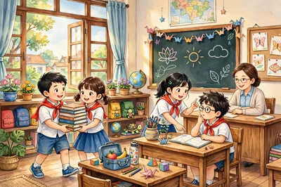
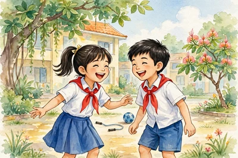
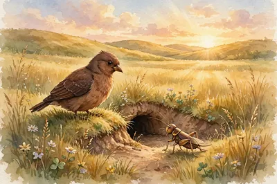

Bài 1. Tôi và các bạn
🖼️ Ảnh thật ngoài đời — các ảnh Wikimedia trong khung này là ảnh thật, không phải tranh minh họa truyện.


📖 Cách đọc một bài mới — 4 bước
Bước 1) Nhìn nhan đề và hình minh họa. Em tự đoán: bài này sẽ kể về chuyện gì?
Bước 2) Đọc từng đoạn. Hết mỗi đoạn, em tự hỏi: đoạn này nói ý chính gì?
Bước 3) Đọc xong, em nhớ lại ý chính của cả bài bằng lời của mình.
Bước 4) Khi trả lời câu hỏi, em quay lại bài, tìm đúng câu chữ trong bài làm bằng chứng.
Bài nào em cũng đọc theo 4 bước này nhé!
"Chắc bài này kể về một chú dế trẻ vừa ra ở riêng, và bài học đầu tiên trong đời của chú ấy."
📖 Đọc xong bài, em nhớ quay lại đây xem mình đoán có đúng không nhé!
✏️ Chữ in đậm trong bài là chỗ hình vẽ đang vẽ — đọc tới đó, nhìn lại hình một cái.

Tôi sống độc lập từ thuở bé. Ấy là tục lệ lâu đời trong họ nhà dế chúng tôi. Vả lại, mẹ thường bảo chúng tôi rằng: “Phải như thế để các con biết kiếm ăn một mình cho quen đi. Con cái mà cứ nhong nhong ăn bám vào bố mẹ thì chỉ sinh ra tính ỷ lại, xấu lắm, rồi ra đời không làm nên trò trống gì đâu”. Bởi thế, lứa sinh nào cũng vậy, đẻ xong là bố mẹ thu xếp cho con cái ra ở riêng.
📌 ỷ lại — dựa dẫm vào người khác, không tự lo.
📌 trò trống — việc làm ra trò, có kết quả.
Lứa sinh ấy, chúng tôi có cả thảy ba anh em. Ba anh em chúng tôi chỉ ở với mẹ ba hôm. Tới hôm thứ ba, mẹ đi trước, ba đứa tôi tấp tểnh, khấp khởi, nửa lo nửa vui theo sau. Mẹ dẫn chúng tôi đi và mẹ đem đặt mỗi đứa vào một cái hang đất ở bờ ruộng phía bên kia, chỗ trông ra đầm nước mà không biết mẹ đã chịu khó đào bới, be đắp tinh tươm thành hang, thành nhà cho chúng tôi từ bao giờ. Tôi là em út, bé nhất nên được mẹ tôi sau khi dắt vào hang, lại bỏ theo một ít ngọn cỏ non trước cửa, để tôi nếu có bỡ ngỡ, thì đã có ít thức ăn sẵn trong vài ngày.
📌 tấp tểnh, khấp khởi — đi chập chững, vừa lo vừa mừng.
Rồi mẹ tôi trở về.
Tôi cũng không buồn. Trái lại, còn thấy làm khoan khoái vì được ở một mình nơi thoáng đãng, mát mẻ. Tôi vừa thầm cảm ơn mẹ, vừa sạo sục thăm tất cả các hang mẹ đưa đến ở. Khi đã xem xét cẩn thận rồi, tôi ra đứng ở ngoài cửa và ngửng mặt lên trời. Qua những ngọn cỏ ấu nhọn và sắc, tôi thấy màu trời trong xanh. Tôi dọn giọng, vỗ đôi cánh nhỏ tới nách, rồi cao hứng gáy lên mấy tiếng rõ to.
Từ đây, tôi bắt đầu vào cuộc đời của tôi. Cho dù tôi sẽ sung sướng hay khổ sở, cái đó tùy ở tính tình tôi khôn ngoan hay đần độn. Song tôi chưa cần biết đến thế, tính đến thế. Mà hãy lấy sự được ung dung độc lập một mình là điều thích lắm rồi.
Ngày nào cũng vậy, suốt buổi, tôi chui vào trong cùng hang, hì hục đào đất để khoét một cái ổ lớn, làm thành cái giường ngủ sang trọng. Rồi cũng biết lo xa như các cụ già trong họ dế, tôi đào hang sâu sang hai ngả làm những con đường tắt, những cửa sau, những ngách thượng, phòng khi gặp nguy hiểm, có thể thoát thân ra lối khác được.
Chập tối, tôi tạm nghỉ tay và ra đứng ngoài cửa, họp cùng anh chị em hàng xóm quanh bờ ruộng, vừa gảy đàn vừa hát một bài hát hoàng hôn chào tạm biệt ông mặt trời. Khi đêm đã xuống hẳn, cả xóm chúng tôi, các bô lão dế lụ khụ già cốc đế cũng bỗng nhiên vui tính, ai nấy ra khỏi hang, đến tụ hội thật đông tận giữa bãi trong đêm tối mát lạnh, cùng uống sương đọng, ăn cỏ ướt và những gã tài hoa thì gảy đàn thổi sáo, cùng nhau ca hát, nhảy múa linh đình đến tận sáng bạch, lúc ông mặt trời quen thuộc lại nghiêm trang ló lên đằng đông mới tan cuộc ai về nhà nấy.
Ngày nào, đêm nào, sớm và chiều nào cũng ngần ấy thứ việc, thứ chơi. Kể đời mà được như thế cũng khá an nhàn, nhưng mới đầu còn thấy hay hay, về sau cũng nhàm dần.
Bởi tôi ăn uống điều độ và làm việc có chừng mực nên tôi chóng lớn lắm. Chẳng bao lâu tôi đã trở thành một chàng dế thanh niên cường tráng. Đôi càng tôi mẫm bóng. Những cái vuốt ở chân, ở khoeo cứ cứng dần và nhọn hoắt. Thỉnh thoảng, muốn thử sự lợi hại của những chiếc vuốt, tôi co cẳng lên, đạp phanh phách vào các ngọn cỏ. Những ngọn cỏ gãy rạp, y như có nhát dao vừa lia qua. Đôi cánh tôi, trước kia ngắn hủn hoẳn bây giờ thành cái áo dài kín xuống tận chấm đuôi. Mỗi khi tôi vũ lên, đã nghe tiếng phành phạch giòn giã. Lúc tôi đi bách bộ thì cả người tôi rung rinh một màu nâu bóng mỡ soi gương được và rất ưa nhìn. Đầu tôi to ra và nổi từng tảng, rất bướng. Hai cái răng đen nhánh lúc nào cũng nhai ngoàm ngoạp như hai lưỡi liềm máy làm việc. Sợi râu tôi dài và uốn cong một vẻ rất đỗi hùng dũng. Tôi lấy làm hãnh diện với bà con vì cặp râu ấy lắm. Cứ chốc chốc tôi lại trịnh trọng và khoan thai đưa cả hai chân lên vuốt râu.
📌 khoeo — chỗ cong phía sau đầu gối chân.

○ Chưa xong đoạn này
Tôi đi đứng oai vệ. Mỗi bước đi, tôi làm điệu dún dẩy cái khoeo chân, rung lên rung xuống hai chiếc râu. Cho ra kiểu cách con nhà võ. Tôi tợn lắm. Dám cà khịa với tất cả mọi bà con trong xóm. Khi tôi to tiếng thì ai cũng nhịn, không ai đáp lại. Bởi vì quanh quẩn ai cũng quen mình cả. Không nói, có lẽ họ nể hơn là sợ. Nhưng tôi lại tưởng thế là không ai dám ho he. Ấy vậy, tôi cho tôi giỏi.
📌 cà khịa — cố tình trêu chọc, gây sự với người khác.
○ Chưa xong đoạn này
Những gã xốc nổi thường làm cử chỉ ngông cuồng là tài cao. Tôi quát mấy chị Cào Cào ngụ ngoài đầu bờ khiến mỗi lần thấy tôi đi qua, các chị phải núp khuôn mặt trái xoan dưới nhánh cỏ, chỉ dám đưa mắt lên nhìn trộm. Thỉnh thoảng, tôi ngứa chân đá một cái, ghẹo anh Gọng Vó lấm láp vừa ngơ ngác dưới đầm lên. Tôi càng tưởng tôi là tay ghê gớm, có thể sắp đứng đầu thiên hạ rồi.
○ Chưa xong đoạn này
Chao ôi, có biết đâu rằng: hung hăng hống hách láo chỉ tổ đem thân mà trả nợ những cử chỉ ngu dại của mình thôi. Tôi đã phải trải cảnh như thế. Thoát nạn rồi mà còn ân hận quá, ân hận mãi. Thế mới biết, nếu đã trót không suy tính, lỡ xảy ra những việc dại dột, dù về sau có hối cũng không thể làm lại được.
Câu chuyện ân hận đầu tiên mà tôi ghi nhớ suốt đời.
Bên hàng xóm tôi có cái hang của Dế Choắt. Dế Choắt là tên tôi đặt cho nó một cách chế diễu và trịch thượng thế. Choắt nọ cũng chắc trạc tuổi tôi. Nhưng vì Choắt bẩm sinh yếu đuối nên tôi coi thường và gã cũng sợ tôi lắm.
Cái chàng Dế Choắt, người gày gò và dài lêu nghêu như một gã nghiện thuốc phiện. Đã thanh niên rồi mà cánh chỉ ngắn ngủn đến giữa lưng, hở cả hai mạng sườn như người cởi trần mặc áo gi-lê. Đôi càng bè bè, nặng nề trông đến xấu. Râu ria gì mà cụt có một mẩu, mà mặt mũi lúc nào cũng ngẩn ngẩn ngơ ngơ. Đã vậy tính nết lại ăn sổi, ở thì (thật chỉ vì ốm đau luôn luôn không làm được) một cái hang ở cũng chỉ bới nông sát mặt đất, không biết đào sâu rồi khoét ra nhiều ngách như hang tôi.
📌 ăn sổi ở thì — sống qua ngày, không lo xa.
Một hôm tôi sang chơi, thấy trong nhà luộm thuộm, bề bộn, tôi bảo:
– Sao chú mày sinh sống cẩu thả quá như thế! Nhà cửa đâu mà tuềnh toàng. Ngộ có kẻ nào đến phá thì thật chú chết ngay đuôi! Này thử xem: khi chú chui vào tổ lưng chú phải lồm cồm đụng sát lên tận mặt đất, làm cho ai trên vòm cỏ nhìn sang cũng biết chú đương đi đứng chỗ nào trong tổ. Phỏng thử có thằng chim Cắt nó nhòm thấy, nó tưởng mồi, nó mổ một phát, nhất định trúng giữa lưng chú, thì chú có mà đi đời! Ôi thôi, chú mày ơi! Chú mày có lớn mà chẳng có khôn.
📌 tuềnh toàng — lộn xộn, không ngăn nắp, tạm bợ.
Ngẫm ra thì tôi chỉ nói lấy sướng miệng thôi. Còn Dế Choắt than thở thế nào, tôi cũng không để tai. Hồi ấy tôi có tính tự đắc, cứ miệng mình nói tai mình nghe chứ không biết nghe ai, thậm chí cũng chẳng để ý có ai nghe mình không.
Dế Choắt trả lời tôi bằng một giọng rất buồn rầu:
– Thưa anh, em cũng muốn khôn, nhưng không khôn được, đụng đến việc là em thở rồi, không còn hơi sức đâu mà đào bới nữa. Lắm khi em cũng nghĩ nỗi nhà cửa thế này là nguy hiểm, nhưng em nghèo sức quá, em đã lo ròng rã hàng mấy tháng nay cũng không biết làm thế nào. Hay bây giờ em định thế này… Song anh có cho phép nói em mới dám nói…
Rồi Dế Choắt loanh quanh, băn khoăn. Tôi phải bảo:
– Được, chú mình cứ nói thẳng thừng ra nào.
Dế Choắt nhìn tôi mà rằng:
– Anh đã nghĩ thương em như thế thì hay là anh đào giúp cho em một cái ngách sang bên nhà anh phòng khi tắt lửa tối đèn có đứa nào đến bắt nạt thì em chạy sang…
Chưa nghe hết câu tôi đã hếch răng, xì một hơi rõ dài rồi, với điệu bộ khinh khỉnh, tôi mắng:
– Hức! Thông ngách sang nhà ta? Dễ nghe nhỉ! Chú mày hôi như cú mèo thế này, ta làm sao chịu được. Thôi im cái điệu hát mưa dầm sụt sùi ấy đi. Đào tổ nông thì cho chết!
Tôi về không một chút bận tâm.
○ Chưa xong đoạn này
Một buổi chiều, tôi ra đứng cửa hang như mọi khi, xem hoàng hôn xuống.
Mấy hôm nọ, trời mưa lớn, trên những hồ ao quanh bãi trước mặt, nước dâng trắng mênh mông. Nước đầy và nước mới thì cua cá cũng tấp nập xuôi ngược, thế là bao nhiêu cò, sếu, vạc, cốc, le le, sâm cầm, vịt trời, bồ nông, mòng, két ở các bãi sông xơ xác tận đâu cũng bay cả về vùng nước mới để kiếm mồi. Suốt ngày họ cãi cọ om bốn góc đầm, có khi chỉ vì tranh một mồi tép, có những anh cò vêu vao ngày ngày bì bõm lội bùn tím cả chân mà vẫn hếch mỏ, chẳng được miếng nào. Khổ quá, những kẻ yếu đuối, vật lộn cật lực thế mà cũng không sống nổi. Tôi đứng trong bóng nắng chiều tỏa xuống ánh nước cửa hang mà suy nghĩ việc đời như thế.
Bỗng thấy chị Cốc từ mặt nước bay lên, đến đậu gần hang tôi, cách có mấy bước. Chừng rớ được món nào, vừa chén xong, chị tìm đến đứng chỗ mát rỉa lông, rỉa cánh và chùi mép.
Tính tôi hay nghịch ranh. Chẳng bận đến tôi, tôi cũng nghĩ mưu trêu chị Cốc. Tôi cất tiếng gọi Dế Choắt. Nghe tiếng thưa, tôi hỏi:
– Chú mình có muốn cùng tớ đùa vui không?
– Đùa trò gì? Em đương lên cơn hen đây. Hừ hừ…
– Đùa chơi một tí.
– Hừ hừ… cái gì thế?
– Con mụ Cốc kia kìa.
Dế Choắt ra cửa, hé mắt nhìn chị Cốc. Rồi hỏi tôi:
– Chị Cốc béo xù đứng trước cửa nhà ta ấy hả?
– Ừ.
– Thôi thôi… hừ hừ… Em xin vái cả sáu tay. Anh đừng trêu vào… Anh phải sợ…
Tôi quắc mắt:
– Sợ gì? Mày bảo tao sợ cái gì? Mày bảo tao còn biết sợ ai hơn tao nữa?
– Thưa anh, thế thì… hừ hừ… em xin sợ. Mời anh cứ đùa một mình thôi.
Tôi lại mắng Dế Choắt và bảo:
– Giương mắt ra xem tao trêu con mụ Cốc đây này.
Tôi rình đến lúc chị Cốc rỉa cánh quay đầu lại phía cửa tôi, tôi cất giọng véo von:
Cái Cò, cái Vạc, cái Nông Ba cái cùng béo, vặt lông cái nào? Vặt lông cái Cốc cho tao Tao nấu, tao nướng, tao xào, tao ăn.
Chị Cốc nghe tiếng hát từ trong đất văng vẳng lên, không hiểu như thế nào, giật nẩy hai đầu cánh, muốn bay.
Đến khi định thần lại, chị mới trợn tròn mắt, giương cánh lên như sắp sửa đánh nhau. Chị lò dò về phía cửa hang tôi hỏi:
– Đứa nào cạnh khoé gì tao thế? Đứa nào cạnh khoé gì tao thế?
Tôi chui tọt ngay vào hang, lên giường nằm khểnh, bắt chân chữ ngũ. Bụng nghĩ thú vị: “Mày tức thì mày cứ tức, mày ghè vỡ đầu mày ra cho nhỏ đi, nhỏ đến đâu mày cũng không chui nổi vào tổ tao đâu!”
Một tai hoạ đến mà đứa ích kỷ thì không thể biết trước được. Đó là, không trông thấy tôi, nhưng chị Cốc đã trông thấy Dế Choắt đang loay hoay trong cửa hang, chị Cốc liền quát lớn:
– Mày nói gì?
– Lạy chị, em nói gì đâu?
Rồi Dế Choắt lủi vào.
– Chối hả? Chối này! Chối này!
Mỗi câu “chối này” chị Cốc lại giáng một mỏ xuống. Mỏ Cốc như cái dùi sắt, chọc xuyên cả đất. Rúc trong hang mà bị trúng hai mỏ, Choắt quẹo xương sống lăn ra kêu váng. Núp tận đáy đất mà tôi cũng khiếp, nằm im thin thít. Nhưng đã hả cơn tức, chị Cốc đứng rỉa lông cánh một lát nữa rồi lại bay là xuống đầm nước, không chút để ý đến cảnh khổ đau vừa gây ra.
Biết chị Cốc đi rồi, tôi mới mon men bò lên. Trông thấy tôi, Dế Choắt khóc thảm thiết.
Tôi hỏi một câu ngớ ngẩn:
– Sao? Sao?
Choắt không dậy được nữa, nằm thoi thóp. Thấy thế tôi hốt hoảng quỳ xuống, nâng đầu Choắt lên mà than rằng:
– Nào tôi đâu biết cơ sự lại ra nông nỗi này! Tôi hối lắm. Tôi hối hận lắm! Anh mà chết là chỉ tại cái tội ngông cuồng dại dột của tôi. Tôi biết làm thế nào bây giờ?
Tôi không ngờ Dế Choắt nói với tôi một câu thế này:
– Thôi, tôi ốm yếu quá rồi, chết cũng được. Nhưng trước khi nhắm mắt, tôi khuyên anh: ở đời mà có thói hung hăng bậy bạ, có óc mà không biết nghĩ, sớm muộn rồi cũng mang vạ vào mình đấy.
Thế rồi Dế Choắt tắt thở. Tôi thương lắm. Vừa thương vừa ăn năn tội mình. Giá tôi không trêu chị Cốc thì đâu đến nỗi Choắt chết. Cả tôi nữa, nếu không nhanh chân chạy vào hang thì tôi cũng chết toi rồi.

Tôi đem xác Dế Choắt đến chôn vào một vùng cỏ bùm tum. Tôi đắp thành nấm mộ to. Tôi đứng lặng giờ lâu, nghĩ về bài học đường đời đầu tiên.
○ Chưa xong đoạn này
Nguồn văn bản: trích chương I truyện Dế Mèn phiêu lưu ký (Tô Hoài) — nguyên văn đoạn trích như trong SGK Ngữ văn 6 Kết nối tri thức. Đối chiếu toàn văn truyện tại thohay.vn và các đề đọc hiểu trích dẫn SGK.
- Phần 1 — Dế Mèn tự kể về mình: Dế Mèn là chàng dế trẻ cường tráng, đẹp mã: càng mẫm bóng, cánh dài, râu dài cong vút. Nhưng càng tự hào, Mèn càng kiêu căng, xốc nổi, coi thường mọi người xung quanh, nhất là Dế Choắt gầy gò, yếu ớt ở hang bên.
- Phần 2 — Cái giá của tính kiêu căng: Để ra oai, Dế Mèn bày trò trêu chị Cốc rồi chui tọt vào hang sâu trốn. Chị Cốc tưởng Dế Choắt trêu mình nên mổ cho Choắt những nhát chí mạng. Dế Choắt chết. Trước khi chết, Choắt còn tha thứ và dặn Mèn một câu thấm thía. Dế Mèn ân hận, chôn cất bạn và rút ra bài học đường đời đầu tiên: không được hung hăng, kiêu ngạo mà phải biết nghĩ trước khi làm.
Đọc từng đoạn một, hết đoạn thì trả lời 1 câu.
"Chắc bài này kể về cuộc gặp gỡ giữa Hoàng tử bé và một con cáo, và cách để có được một người bạn thật sự."
📖 Đọc xong bài, em nhớ quay lại đây xem mình đoán có đúng không nhé!

Thế rồi một con cáo xuất hiện:
– Xin chào – con cáo nói.
– Xin chào – hoàng tử bé lịch sự trả lời rồi quay người lại nhưng không nhìn thấy gì.
– Mình ở đây – giọng nói vang lên – dưới cây táo...
– Bạn là ai? Hoàng tử bé hỏi. – Bạn dễ thương quá...
– Mình là cáo – con cáo trả lời.
– Lại đây chơi với mình đi – hoàng tử bé đề nghị nó. – Mình buồn quá...
– Mình không thể chơi với bạn được – con cáo nói. – Mình chưa được cảm hóa.
– À! Xin lỗi! – Hoàng tử bé thốt lên.
Nhưng sực nhớ ra, cậu hỏi lại:
– “Cảm hóa” nghĩa là gì?
– Bạn không phải người ở đây – con cáo nói – bạn đi tìm gì vậy?
– Mình đi tìm con người. – Hoàng tử bé nói. – “Cảm hóa” nghĩa là gì?
– Con người – con cáo nói – họ có súng và họ đi săn. Thật là phiền toái! Họ còn nuôi gà nữa. Đó là chuyện được nhất ở họ. Bạn có tìm gà không?
– Không, mình đi tìm bạn bè. “Cảm hóa” nghĩa là gì?
– Đó là thứ đã bị lãng quên lâu lắm rồi. Nó có nghĩa là “làm cho gần gũi hơn...”.
– Làm cho gần gũi hơn?
– Chứ sao – con cáo lên giọng. – Bạn đối với mình mới chỉ là một cậu bé giống như cả trăm nghìn cậu bé. Và mình không cần đến bạn. Còn bạn cũng chẳng cần gì đến mình. Mình đối với bạn chỉ là một con cáo giống như cả trăm nghìn con cáo. Nhưng, nếu bạn cảm hóa mình, tụi mình sẽ cần đến nhau. Lúc đó bạn đối với mình sẽ là duy nhất trên đời. Mình đối với bạn sẽ là duy nhất trên đời...
○ Chưa xong đoạn này
– Mình bắt đầu hiểu rồi. Có một bông hoa... Mình nghĩ là nó đã cảm hóa mình...
– Có thể lắm! Trên Trái Đất người ta thấy đủ thứ chuyện...
– Ồ! Không phải trên Trái Đất – hoàng tử bé nói.
Con cáo tỏ ra rất tò mò:
– Trên một hành tinh khác?
– Đúng vậy.
– Có thợ săn trên hành tinh đó không?
– Không.
– Chuyện này, đúng là thú vị! Còn gà?
– Không.
– Chẳng có gì là hoàn hảo – con cáo thở dài.
Nhưng rồi nó quay lại với ý nghĩ lúc nãy:
– Cuộc sống của mình thật đơn điệu. Mình săn gà, con người săn mình. Mọi con gà đều giống nhau, mọi con người đều giống nhau. Cho nên mình hơi chán. Bởi vậy, nếu bạn cảm hóa mình, xem như đời mình đã được chiếu sáng. Mình sẽ biết thêm một tiếng chân khác hẳn mọi bước chân khác. Những bước chân khác chỉ khiến mình trốn vào lòng đất. Còn bước chân của bạn sẽ gọi mình ra khỏi hang, như là tiếng nhạc. Và nhìn xem! Bạn thấy không, cánh đồng lúa mì đằng kia? Mình không ăn bánh mì. Lúa mì chả có ích gì cho mình. Những đồng lúa mì chẳng gợi nhớ gì cho mình cả. Mà như vậy thì buồn quá! Nhưng bạn có mái tóc vàng óng. Nếu bạn cảm hóa mình thì thật là tuyệt vời! Lúa mì vàng óng ả sẽ làm mình nhớ đến bạn. Và mình sẽ thấy thích tiếng gió trên đồng lúa mì...
Con cáo ngừng lời và nhìn hoàng tử bé chăm chú. Nó nói:
– Bạn làm ơn... cảm hóa mình đi!
– Mình muốn lắm – hoàng tử bé trả lời – nhưng mình không có thời gian. Mình còn phải đi kiếm bạn bè và tìm hiểu nhiều thứ.
– Người ta chỉ hiểu những gì họ đã cảm hóa.
(… — phần còn lại của đoạn này em đọc tiếp trong SGK giấy.)
– Nếu muốn có một người bạn, hãy cảm hóa mình đi!
– Cần phải làm sao? – Hoàng tử bé hỏi.
– Cần phải rất kiên nhẫn – con cáo trả lời. – Trước tiên bạn ngồi xa mình một chút, như thế, trên cỏ. Mình sẽ liếc nhìn bạn còn bạn thì không nói gì cả. Lời nói là nguồn gốc của mọi sự hiểu lầm. Nhưng mỗi ngày, bạn có thể ngồi xích lại gần hơn...
(… — phần cáo dặn về “nghi thức” em đọc tiếp trong SGK giấy.)
Cứ thế, hoàng tử bé đã cảm hóa con cáo. Khi đến gần lúc phải ra đi, con cáo nói:
– A!... Mình sẽ khóc mất.
– Lỗi do bạn đó – hoàng tử bé nói – mình không muốn làm bạn đau lòng chút nào, nhưng bạn lại muốn mình cảm hóa bạn...
– Tất nhiên rồi – con cáo nói.
– Nhưng bạn sẽ khóc – hoàng tử bé nói.
– Tất nhiên rồi – con cáo nói.
– Vậy thì bạn chẳng được gì cả.
– Mình được chứ – con cáo nói – bởi vì còn có màu lúa mì.
Sau đó nó nói thêm:
– Hãy thăm lại vườn hồng đi! Bạn sẽ hiểu rằng bông hoa của bạn là duy nhất trên đời. Rồi khi bạn quay lại vĩnh biệt mình, mình sẽ tặng bạn một bí mật làm quà.
○ Chưa xong đoạn này
Hoàng tử bé đi thăm lại vườn hoa hồng:
– Các bạn chẳng giống bông hồng của tôi chút nào, các bạn chưa là gì cả – cậu nói với chúng. – Chẳng ai cảm hóa các bạn và các bạn chẳng cảm hóa ai. Các bạn giống như bạn cáo của tôi ngày trước. Hồi đó bạn ấy chỉ là một con cáo như cả trăm ngàn con khác. Nhưng tôi đã biến bạn ấy thành bạn của tôi, và bây giờ bạn ấy trở thành duy nhất trên đời.
(… — phần Hoàng tử bé nói tiếp với vườn hồng em đọc tiếp trong SGK giấy.)
Rồi cậu quay lại chỗ con cáo:
– Vĩnh biệt – cậu nói...
– Vĩnh biệt – con cáo nói. – Đây là bí mật của mình. Rất đơn giản: người ta chỉ thấy rõ với trái tim. Điều cốt lõi vô hình trong mắt trần.
– Điều cốt lõi vô hình trong mắt trần – hoàng tử bé lặp lại, để cho nhớ.
– Chính thời gian mà bạn bỏ ra cho bông hồng của bạn đã khiến bông hồng của bạn trở nên quan trọng đến thế.
– Chính thời gian mà mình bỏ ra cho bông hồng của mình... – Hoàng tử bé lặp lại, để cho nhớ.
– Con người đã quên mất sự thật này – con cáo nói. – Nhưng bạn thì không được quên. Bạn có trách nhiệm mãi mãi với những gì bạn đã cảm hóa. Bạn có trách nhiệm với bông hồng của bạn...
– Mình có trách nhiệm với bông hồng của mình... – Hoàng tử bé lặp lại, để cho nhớ.
Nguồn văn bản: trích chương XXI Hoàng tử bé (Ăng-toan đơ Xanh-tơ Ê-xu-pe-ri), bản dịch Nguyễn Tấn Đại (NXB Hội Nhà văn, 2005; hiệu đính 2020) — đúng bản dịch in trong SGK Ngữ văn 6 Kết nối tri thức. Đối chiếu tại olm.vn (trích nguyên văn SGK, có ghi nguồn dịch). Ba chỗ đánh dấu (…) là đoạn trang nguồn đăng thiếu, không tự chế thêm.
- Hoàng tử bé gặp con cáo. Cáo nói: nếu muốn có một người bạn, hãy "cảm hóa" cáo đi — nghĩa là tạo nên những mối dây liên kết giữa hai bên.
- Khi đã cảm hóa nhau, hai người trở thành duy nhất đối với nhau: đồng lúa mì vàng sẽ làm cáo nhớ tới mái tóc vàng của Hoàng tử bé.
- Lúc chia tay, cáo tặng một bí mật: những điều quan trọng nhất — như tình bạn — thì mắt thường không nhìn thấy, chỉ có trái tim mới nhìn rõ. Và ta phải chịu trách nhiệm với người bạn mình đã cảm hóa (như bông hồng của Hoàng tử bé).
"Chắc bài này kể về tình bạn của mấy chú chó, mỗi bạn một tính cách khác nhau."
📖 Đọc xong bài, em nhớ quay lại đây xem mình đoán có đúng không nhé!

⚠️ Chưa có toàn văn công khai đáng tin: đoạn trích này trong SGK Ngữ văn 6 Kết nối tri thức (tr. 34) trích từ chương 4 và chương 5 của truyện Tôi là Bê-tô (2007); các nguồn công khai hiện chỉ đăng tóm tắt và đáp án vở thực hành, không đăng toàn văn đoạn trích. Vì vậy khối này chỉ tóm tắt nội dung đã xác minh được — không phải toàn văn SGK. Em đọc toàn văn trong SGK giấy tr. 34 nhé!
- Người kể chuyện là chú chó Bê-tô, kể ở ngôi thứ nhất. Chủ của Bê-tô và Bi-nô là chị Ni; còn Lai-ca sống ở nhà bà cố của chị Ni.
- Lai-ca rất giống Bê-tô: nghịch ngợm, sôi nổi — nhai giày dép, nhai xà phòng, nhảy chồm chồm trong giờ ăn. Gặp được bạn giống mình, Bê-tô vô cùng sung sướng.
- Bi-nô thì khác hẳn: điềm tĩnh (bình tĩnh, không vội vàng), thông thái (hiểu biết sâu, suy nghĩ thấu đáo) — dẫn Bê-tô chui vào dưới chạn thức ăn nằm nghe mưa, gãi mõm vào tai bạn hỏi: “Mày sao thế? Sợ à?” — “Sợ nhưng mà thích chứ?”; Bi-nô mở ra cho Bê-tô một cách nhìn mới về bạn bè và những cái thú ở đời.
- Qua hai người bạn, Bê-tô nhận ra: tình bạn không chỉ cần giống nhau; mỗi người bạn mang đến cho ta những trải nghiệm khác nhau, và khoảng cách hay khác biệt cũng không ngăn được tình bạn.
Nguồn tóm tắt: đoạn trích Những người bạn (Nguyễn Nhật Ánh, trích chương 4–5 Tôi là Bê-tô) — nội dung và chi tiết đối thoại trên đối chiếu tại vietjack.com (soạn bài Thực hành đọc tr. 34 và giải VTH Ngữ văn 6) và thethaovanhoa.vn (giới thiệu trích đoạn SGK). Không tự viết thêm lời văn nào rồi ghi là nguyên văn SGK.
- Nhớ nhanh: Bê-tô kể chuyện — Lai-ca giống mình, nghịch ngợm; Bi-nô khác mình, thông thái, rủ nghe mưa.
- Ý chính: bạn khác mình vẫn là bạn tốt, vì mỗi người bạn dạy ta một điều mới.
Bắt nạt là xấu lắm
Đừng bắt nạt, bạn ơi
Bắt cứ ai trên đời
Đều không cần bắt nạt
Tại sao không học hát
Nhảy híp-hóp(2) cho hay?
Thời gian trong một ngày
Đâu để dành bắt nạt
Sao không ăn mù tạt(3)
Đối diện thử thách đi?
Thử kẻ yếu làm gì
Sao không trêu mù tạt?
Những bạn nào nhút nhát
Thì là giống thỏ non
Trông đáng yêu đấy chứ
Sao không yêu, lại còn...?
Đừng bắt nạt người lớn
Đừng bắt nạt trẻ con
Đừng bắt nạt nước khác
Trên khắp trái đất tròn
Đừng bắt nạt mèo, chó
Đừng bắt nạt cái cây
Đừng bắt nạt ai cả
Vì bắt nạt dễ lây
Bạn nào bắt nạt bạn
Cứ đùa bài thơ này
Bảo nếu cần bắt nạt
Thì đến gặp tớ ngay
Cứ đến bắt nạt tớ
Bị bắt nạt quen rồi
Vẫn không thích bắt nạt
Vì bắt nạt rất hôi!
Nguồn văn bản: bài thơ Bắt nạt (Nguyễn Thế Hoàng Linh) — đưa TRỌN BÀI như trong SGK Ngữ văn 6 Kết nối tri thức (Văn bản 3, Bài 1, tr. 27–28), chép nguyên văn từ bản scan SGK. Nguồn in trong SGK: (Nguyễn Thế Hoàng Linh, Ra vườn nhặt nắng, NXB Thế giới, Hà Nội, 2017, tr. 24 – 25). Chú thích trong SGK: (1) Nguyễn Thế Hoàng Linh sinh năm 1982 tại Hà Nội. Anh sáng tác thơ từ năm 12 tuổi, hiện đã có “gia tài” là hàng ngàn bài thơ. Thơ Nguyễn Thế Hoàng Linh viết cho trẻ em rất hồn nhiên, ngộ nghĩnh, trong trẻo, tươi vui. (2) Híp-hóp: một điệu nhảy hiện đại, linh hoạt, tự do, được giới trẻ yêu thích. (3) Mù tạt: gia vị được chế biến từ hạt của cây họ cải, có vị cay nồng.
kiêu căng — tự cho mình giỏi, coi thường người khác.Ví dụ: Giỏi mà kiêu căng thì bạn bè cũng xa lánh dần.xốc nổi — nóng vội, làm việc thiếu suy nghĩ chín chắn.Ví dụ: Vì một phút xốc nổi, cậu ấy đã nói lời làm bạn tổn thương.ân hận — day dứt, tiếc nuối vì việc mình đã làm sai.Ví dụ: Sau khi lỡ tay làm vỡ lọ hoa của mẹ, em ân hận mãi.cảm hóa — làm cho gần gũi, gắn bó với mình (trong truyện: tạo nên mối liên kết tình cảm).Ví dụ: Chăm sóc chú mèo hoang mỗi ngày, dần dần em đã cảm hóa được nó.cốt yếu — quan trọng nhất, là cái chính (đồng nghĩa: cốt lõi — từ trong bài Hoàng tử bé).Ví dụ: Điều cốt yếu trong tình bạn là sự chân thành.
✋ Đọc kĩ đề, rồi bấm chọn những từ / cụm từ quan trọng nhất trong đề — những từ cho biết đề bắt em làm gì, viết về ai / cái gì. Chọn xong thì bấm nút Đối chiếu nhé!
• Mở bài: Giới thiệu lần mắc lỗi đó là lần nào…
• Thân bài: ý 1 — chuyện xảy ra như thế nào…
• Thân bài: ý 2 — hậu quả ra sao…
• Thân bài: ý 3 — lúc đó em cảm thấy thế nào…
• Kết bài: Bài học em rút ra…
Thân bài: Kể lại diễn biến theo thứ tự: chuyện gì xảy ra → hậu quả thế nào → lúc đó em cảm thấy gì (sợ, ân hận…).
Kết bài: Bài học em rút ra — viết thành một câu rõ ràng, giống như "bài học đường đời" của riêng em.
✍️ Khung câu để bám vào — thay phần "…" bằng ý và lời của em:
• Mở bài: "Hôm ấy, em đã mắc một lỗi mà đến giờ nghĩ lại em vẫn còn ân hận: …"
• Bắt đầu kể: "Chuyện bắt đầu khi…"
• Nối các sự việc: "Lúc đầu… Sau đó… Cuối cùng…"
• Nói cảm xúc: "Lúc ấy, em vừa… vừa…"
• Kết bài: "Từ lần đó, em tự hứa với mình rằng…"
Đọc đoạn mẫu để học cách làm thôi nhé — không chép nguyên văn vào bài của mình!

✋ Đọc kĩ đề, rồi bấm chọn những từ / cụm từ quan trọng nhất trong đề — những từ cho biết đề bắt em làm gì, viết về ai / cái gì. Chọn xong thì bấm nút Đối chiếu nhé!
• Mở đoạn: Cảm nghĩ chung của em về Dế Mèn…
• Thân đoạn: ý 1 — điểm em trách ở Mèn, kèm dẫn chứng trong truyện…
• Thân đoạn: ý 2 — điểm em thương ở Mèn, kèm dẫn chứng…
• Kết đoạn: Em học được gì từ nhân vật này…
Thân đoạn: Đưa 2 dẫn chứng từ truyện: (1) Mèn kiêu căng, trêu chị Cốc; (2) Mèn ân hận, chôn cất Dế Choắt tử tế. Mỗi dẫn chứng kèm một câu cảm nghĩ của em.
Câu kết: Em học được gì từ nhân vật này?
✍️ Khung câu để bám vào — thay phần "…" bằng ý và lời của em:
• Mở đoạn: "Đọc truyện, em vừa… vừa… Dế Mèn." (ví dụ: vừa trách, vừa thương)
• Đưa dẫn chứng: "Em trách Mèn vì… Bằng chứng là khi…"
• Chuyển ý: "Nhưng em cũng thương Mèn, vì…"
• Kết đoạn: "Qua nhân vật Dế Mèn, em hiểu rằng…"
Đọc đoạn mẫu để học cách làm thôi nhé — không chép nguyên văn vào bài của mình!

✋ Đọc kĩ đề, rồi bấm chọn những từ / cụm từ quan trọng nhất trong đề — những từ cho biết đề bắt em làm gì, viết về ai / cái gì. Chọn xong thì bấm nút Đối chiếu nhé!
• Mở đầu: Trả lời thẳng câu hỏi bằng 1–2 câu…
• Thân bài: ý 1 — bạn tốt là người… (dẫn chứng: cáo…)
• Thân bài: ý 2 — bạn tốt còn là người… (dẫn chứng…)
• Kết bài: Liên hệ bản thân — em muốn làm người bạn thế nào…
Thân bài: Nêu 2–3 ý, mỗi ý gắn một dẫn chứng: biết gắn bó và dành thời gian cho nhau (cáo chờ Hoàng tử bé mỗi ngày); biết chịu trách nhiệm với bạn; nhìn nhau bằng trái tim — tức quan tâm thật lòng chứ không chỉ nhìn bề ngoài.
Kết bài: Liên hệ với bản thân: em muốn làm một người bạn như thế nào?
✍️ Khung câu để bám vào — thay phần "…" bằng ý và lời của em:
• Mở đầu: "Theo em, một người bạn tốt là người…"
• Nêu ý + dẫn chứng: "Bạn tốt là người biết…, như cáo đã dạy Hoàng tử bé rằng…"
• Thêm ý: "Không chỉ vậy, bạn tốt còn là người…"
• Kết bài: "Em mong mình sẽ là một người bạn như thế: …"
Đọc đoạn mẫu để học cách làm thôi nhé — không chép nguyên văn vào bài của mình!
Tập làm văn là tập viết ra suy nghĩ của mình bằng lời của em, không phải chép văn mẫu. Chỉ 2 việc nhỏ, làm nhanh là được!

Gặp lại các từ này trong gợi ý viết bên dưới nhé!
kiêu căng — tự cho mình giỏi, coi thường người khác.Ví dụ: Dế Mèn kiêu căng nên chẳng ai muốn chơi cùng. (Đồng nghĩa: kiêu ngạo. Trái nghĩa: khiêm tốn)xốc nổi — làm việc vội vàng, không suy nghĩ kĩ.Ví dụ: Chỉ vì một phút xốc nổi, Mèn đã gây ra tai họa. (Đồng nghĩa: nóng vội. Trái nghĩa: chín chắn)ân hận — day dứt vì việc sai mình đã làm.Ví dụ: Mèn ân hận mãi vì cái chết của Dế Choắt. (Đồng nghĩa: hối hận)cảm hóa — làm cho gần gũi, gắn bó với mình.Ví dụ: Hoàng tử bé đã cảm hóa con cáo bằng thời gian và tình cảm. (Đồng nghĩa: làm thân. Trái nghĩa: xa lánh)cốt yếu — quan trọng nhất.Ví dụ: Điều cốt yếu trong tình bạn là sự chân thành. (Đồng nghĩa: cốt lõi)trịch thượng — ra vẻ bề trên, coi thường người khác.Ví dụ: Mèn gọi bạn bằng cái tên trịch thượng. (Đồng nghĩa: khinh khỉnh)hống hách — hung hăng, hách dịch, bắt nạt người yếu.Ví dụ: Thói hung hăng hống hách chỉ đem lại tai họa. (Trái nghĩa: hiền hòa)💡 Tả là gì? Là viết sao cho người đọc hình dung được người, vật hoặc cảnh như đang nhìn thấy — vì vậy em cần tả hình dáng, màu sắc, âm thanh và cảm xúc của mình.
👀 Gợi ý quan sát:
• Bạn ấy có dáng vẻ thế nào? (cao, thấp, tóc, nụ cười…)
• Tính nết của bạn ấy ra sao? (hay cười, khiêm tốn, tốt bụng…)
• Kể một lần bạn ấy giúp em hoặc chơi cùng em.
📋 Dàn ý 3 dòng:
• Mở bài: Bạn ấy là ai, em quen bạn ấy ở đâu.
• Thân bài: Tả ngoại hình, rồi tính nết, rồi 1 kỉ niệm nhỏ.
• Kết bài: Em quý bạn ấy vì điều gì nhất.
✏️ Bài tập nhỏ: Viết 3–5 câu tả một người bạn. Không cần dùng tên thật, em có thể đặt tên tưởng tượng. Không chấm điểm.

💡 Kể là gì? Là thuật lại chuyện đã xảy ra theo thứ tự trước — sau, có cảm xúc của người kể — vì vậy em cần kể rõ ai, ở đâu, chuyện gì xảy ra rồi kết ra sao.
👀 Gợi ý quan sát:
• Hôm đó, Choắt đang làm gì trước cửa hang?
• Dế Mèn đã trêu chị Cốc như thế nào?
• Chị Cốc tưởng ai trêu mình? Kết thúc ra sao?
📋 Dàn ý 3 dòng:
• Mở bài: Hôm đó, tôi (Choắt) đang làm gì.
• Thân bài: Mèn trêu Cốc, Cốc tưởng tôi trêu nên mổ tôi.
• Kết bài: Tôi muốn nhắn Mèn điều gì.
✏️ Bài tập nhỏ: Viết 3–5 câu kể lại chuyện đó theo lời Dế Choắt. Không chấm điểm.

Bài 1. Tôi và các bạn — Bài tập
Bài tập lấy đúng từ phần mềm. Làm bài trên giấy. Đáp án xem trên phần mềm.
Phần 1. Đọc hiểu — Trắc nghiệm, khoanh vào đáp án em chọn
1a. Văn bản 1: “Bài học đường đời đầu tiên” — Tô Hoài
1. “Bài học đường đời đầu tiên” là đoạn trích trong tác phẩm nào của nhà văn Tô Hoài?
☐ A. Vợ chồng A Phủ
☐ B. Dế Mèn phiêu lưu ký
☐ C. Đất rừng phương Nam
☐ D. Quê người
2. Trong truyện, Dế Mèn bày trò trêu chọc ai, khiến Dế Choắt bị vạ lây?
☐ A. Chị Cốc
☐ B. Nhà Trò
☐ C. Bọ Ngựa
☐ D. Dế Trũi
3. Lời trăn trối của Dế Choắt khuyên Dế Mèn điều gì?
☐ A. Phải sống độc lập từ thuở bé, tự lo liệu cho mình, không dựa dẫm vào ai khác
☐ B. Có óc thì phải biết nghĩ, bỏ thói hung hăng bậy bạ kẻo sớm muộn cũng mang vạ vào mình
☐ C. Phải ăn thật nhiều cho thật khỏe mạnh để không ai dám bắt nạt mình nữa
☐ D. Nên đi phiêu lưu khắp nơi cho mở mang tầm mắt, quen biết thêm nhiều bạn mới
1b. Văn bản 2: “Nếu cậu muốn có một người bạn…” — Hoàng tử bé
4. Trong “Nếu cậu muốn có một người bạn…”, con cáo dạy hoàng tử bé: muốn có một người bạn thì trước hết phải làm gì?
☐ A. Tặng bạn thật nhiều quà
☐ B. Khen bạn thật hay
☐ C. “Cảm hóa” nhau — tạo nên mối dây gắn bó thân thiết
☐ D. Hẹn gặp bạn mỗi ngày
5. Theo con cáo, sau khi đã “cảm hóa” nhau, người bạn trở nên như thế nào đối với ta?
☐ A. Là duy nhất trên đời đối với ta
☐ B. Giống như mọi người khác
☐ C. Là người phải luôn nghe lời ta
☐ D. Là người cho ta nhiều quà nhất
1c. Bài học chung (tổng hợp cả 2 văn bản)
6. Qua hai văn bản của Bài 1, bài học chung về tình bạn là gì?
☐ A. Bạn bè chỉ để cùng nhau vui chơi
☐ B. Muốn có bạn tốt phải biết quý trọng, gắn bó và có trách nhiệm với bạn
☐ C. Chỉ nên chơi với người mạnh hơn mình
☐ D. Bạn bè không quan trọng bằng việc học
Phần 2. Tiếng Việt — Viết đáp án vào dòng kẻ
1. 🔄 Hỏi ngược: nghĩa này là từ nào? “tự cho mình giỏi, coi thường người khác.”
2. 🔄 Hỏi ngược: từ “cốt yếu” nghĩa là gì?
Phần 3. Viết
DỄ. Kể lại một lần em mắc lỗi và bài học em rút ra được từ lần đó.
VỪA. Viết một đoạn văn (khoảng 5–7 câu) nêu cảm nghĩ của em về nhân vật Dế Mèn.
KHÓ HƠN. Từ câu chuyện của cáo và Hoàng tử bé, theo em, thế nào là một người bạn tốt?